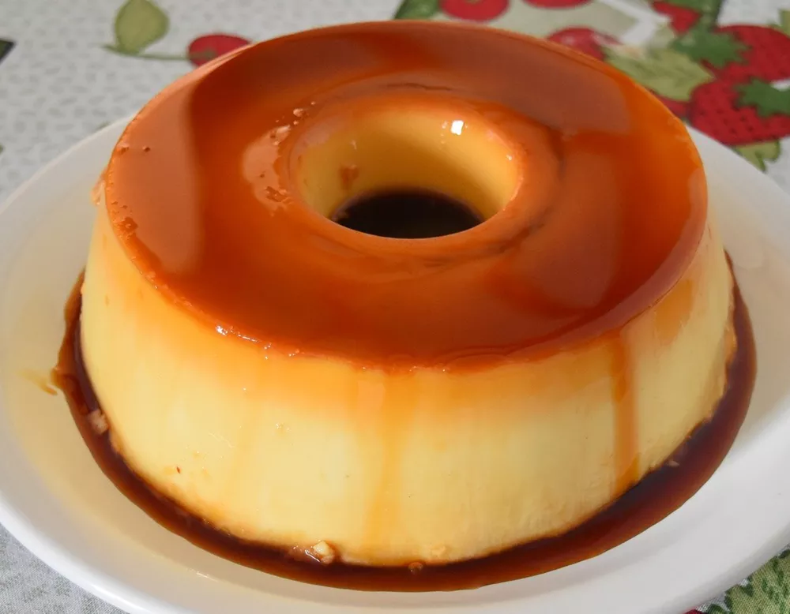

Ingredients
- 1 cup of white sugar
- 3 large Eggs
- 1 can sweetened condesend milk
- 1 cup of milk (you can use the consedend milk can as measure)
Directions:
Simple and easy!
- First preheat the oven in 350F
- Mix the milk, Eggs and the Condesend milk in the blender for about 3 minuts
- After mixing, put the sugar in a pan and wait untill it melt completely
- Add the melted sugar into the baking dish and add the blender mix afeter it
- Now you going to need a larger bowl or pain the can fits the baking dish
- Add water in the bowl and put the baking dish iver it (water bath)
- Put it in the oven and Wait for about 30 minuts
- Unmold it and put it on the fridge for at least 2 hours
Enjoy the delicious dessert!